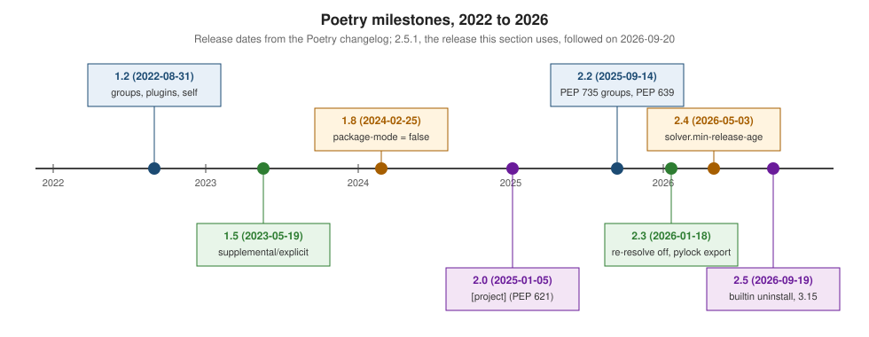

Versions & Release History
|
This content was generated with the assistance of AI and should be verified against the official documentation before being relied on in production. |
This page summarises what changed in Poetry between 1.2 (2022) and 2.5.1 (2026-09-20), the release this section is written against, with poetry-core 2.5.0. Dates are those of the Poetry changelog. Each change links to the page that explains it. The upgrade from 1.x to 2.x has its own page: Migrating to Poetry 2. Projects still on 1.x can read the Poetry 1.8 documentation (1.8.5, 2024-12-06, was the last 1.x release).

How Poetry is released
-
Version numbers are PEP 440
major.minor.micro, bumped "similar to Python’s versioning", and explicitly not semantic versioning. A major bump (2.0.0) only comes for breaking changes that cannot go through a deprecation cycle; a minor release may add features, add deprecations and drop features deprecated in an earlier minor release; a micro release usually only fixes bugs and never drops a deprecated feature. So read the changelog before every minor upgrade, and pin Poetry in CI. The FAQ’s reason: with so many users, almost any change breaks someone, and bumping the major version every time would make the minor number meaningless. -
Two packages.
poetryis the command-line tool;poetry-coreis the PEP 517 build back end that[build-system]names, with its own version (here 2.5.0). A project’s builds depend only on poetry-core, so building it does not need the Poetry CLI at all. -
Python support. Poetry 2.5.1 itself requires Python
>=3.10,<4.0and officially supports 3.15 since 2.5.0. Projects managed by it can target other Pythons; Poetry’s own interpreter is independent of the project’s. -
Pre-releases are installed with
--preview(installer script,poetry self update --preview) or by pinning a version.
Python versions and Poetry
| Change | Poetry release |
|---|---|
Python 3.7 dropped |
1.6.0 (2023-08-20) |
Python 3.12 officially supported |
1.7.0 (2023-11-03) |
Python 3.13 officially supported |
1.8.4 (2024-10-14) |
Python 3.8 dropped |
2.0.0 (2025-01-05) |
Python 3.14 officially supported |
2.2.0 (2025-09-14) |
Python 3.9 dropped |
2.3.0 (2026-01-18) |
Python 3.15 officially supported |
2.5.0 (2026-09-19) |
Release by release
| Release | What changed | Explained on |
|---|---|---|
1.2.0 (2022-08-31) |
The standalone installer ( |
|
1.3.0 (2022-12-09) |
Lock file format 2.0. |
|
1.4.0 (2023-02-27) |
A modern installer independent of pip ( |
|
1.5.0 (2023-05-19) |
Source |
|
1.6.0 (2023-08-20) |
|
|
1.7.0 (2023-11-03) |
Python 3.12; |
|
1.8.0 (2024-02-25) |
|
|
2.0.0 (2025-01-05) |
The PEP 621 |
|
2.1.0 (2025-02-15) |
|
|
2.2.0 (2025-09-14) |
PEP 735 |
|
2.3.0 (2026-01-18) |
|
|
2.3.3 (2026-03-29), 2.3.4 (2026-04-12) |
Security: path traversal fixed in the wheel installer (2.3.3) and in sdist extraction on Python 3.10.0–3.10.12 and 3.11.0–3.11.4 (2.3.4). |
|
2.4.0 (2026-05-03) |
|
|
2.4.2 (2026-08-29) |
Security: path traversal when downloading from a compromised URL or source, another in sdist extraction; no longer installs an artefact missing from the lock file when the source gives no hash. |
|
2.5.0 (2026-09-19), 2.5.1 (2026-09-20) |
|
Announced but not yet done (in every release post from 2.1 to 2.5): when pyproject.toml has no [build-system], Poetry will
fall back to setuptools, as PEP 517 says, instead of poetry-core. Poetry 2.5.1 still uses poetry-core and prints a warning, so
always declare [build-system]. The 2.5 post also plans to make installer.builtin-uninstall the default later.
Upgrade to 2.4.2 or later for the security fixes; every 2.x release before it is affected by at least one of the path traversal issues.
Pinning the Poetry a project needs
Since 2.0 (requires-poetry is checked before any other validation since 2.3), a project can state the Poetry versions that may manage it, and any other Poetry refuses to work on it. With
requires-poetry = ">=3.0" both poetry check and poetry install stop with exit code 1:
[tool.poetry]
requires-poetry = ">=2.4.2,<3.0"This project requires Poetry >=3.0, but you are using Poetry 2.5.1Check the running version with poetry --version (Poetry (version 2.5.1)) or poetry about, which also prints the
poetry-core version (Poetry-Core Version: 2.5.0). In CI pin it explicitly (pipx install poetry==2.5.1; see
CI Caching & Containers). The lock file records the
Poetry that wrote it in its header comment (# This file is automatically @generated by Poetry 2.5.1 …) and its format in
lock-version (2.1). Poetry 2.5.1 reads formats 1.x and 2.x: a newer 2.x format gets the warning The lock file might not be
compatible with the current version of Poetry., a 3.x format the error The lock file is not compatible with the current version
of Poetry.
Source: Poetry: requires-poetry.
Compared with pip
pip uses calendar-based YY.N versions released quarterly and supports only its latest release (see
pip: Versions & Release History). Poetry
uses major.minor.micro versions where a minor release may remove deprecated features; both tools ask you to read the changelog
before upgrading.